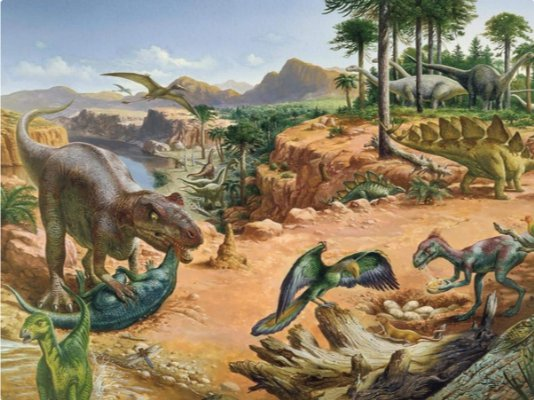
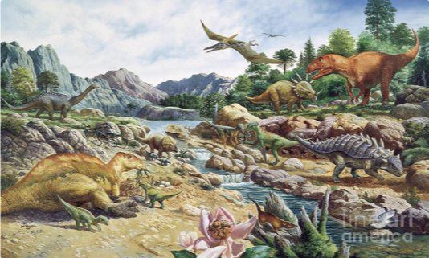

Dinosaurs
Come with us
INTRODUCTION

This page is designed for dinosaur experts and for beginners who love our extinct reptiles too. Here you can find information, photos, their history and much more about them.
Dinosaur means a prehistoric saurian reptile, generally of enormous size, a small head, a very long neck and tail, and shorter forelimbs than the hindquarters.
These became extinct 70 million years ago, and their only living representatives today are crocodiles and birds. We know about them thanks to their fossils and the famous films that have represented them to give us an idea of what dominated the Earth years ago, among them the famous saga of "Jurassic Park"
History of dinosaurs
The history of our reptiles begins with the separation of the supercontinent Pangea, which causes an abrupt change in climate and atmosphere, so the species evolve to the first dinosaurs, which were small, carnivorous and bipedal.
After millions of years, these were evolving until they became the dinosaurs that we all know, and they lived for about 150 million years
The dinosaurs became extinct for a large and prolonged volcanic eruptions and inexplicable climatic changes, which wiped out most of the aquatic, terrestrial and flying species.

Gallery

T-REX

VELOCIRRAPTOR

BRACHIOSAURUS

SPINOSAURUS
PERIODS
It was the first Mesozoic Period and it was a time of strange and diverse creatures and it was ruled mostly by large terrestrial pseudosuchians, strange reptiles like primitive pterosaur mammals, and of course primitive dinosaurss and some other strange animals. It lasted 50.6 million years

It was the second Mesozoic period and followed a mass extinction in the late Triassic that killed many of the dominant terrestrial vertebrate animals that dominated the Triassic, allowing dinosaurs to dominate Earth. It lasted 56 million years
It was the third and last period of the Mesozoic and at that time Pangea had started to disintegrate almost completely and by the end of this period it was no more. The Cretaceous saw the arrival of many new dinosaurs such as Tyrannosaurs, Hadrosaurs, Ceratopsians, Ankylosaurs, Terizinosaurs and many others. The Cretaceous period, in my opinion, was when life reached its most spectacular point as many animals flourished and pterosaurs reached new sizes that had never been seen before and their diversity increased dramatically. It lasted 79 million years
